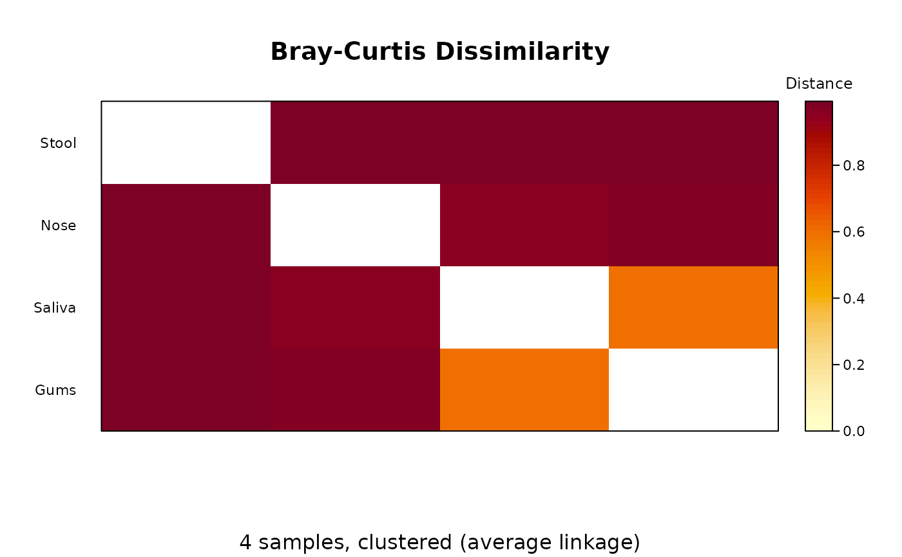

Beta Diversity Wrapper Function
Usage
beta_div(
counts,
metric,
margin = 1L,
norm = "none",
pseudocount = NULL,
power = 1.5,
alpha = 0.5,
tree = NULL,
pairs = NULL,
clust = NULL,
cpus = n_cpus()
)Arguments
- counts
A numeric matrix of count data (samples \(\times\) features). Typically contains absolute abundances (integer counts), though proportions are also accepted by some diversity metrics.
- metric
The name of a beta diversity metric. One of
c('aitchison', 'alt_gower', 'bhattacharyya', 'binomial_deviance', 'bray', 'bray_balanced', 'bray_gradient', 'canberra', 'cao', 'chao_jaccard', 'chebyshev', 'chisq_distance', 'chord', 'clark', 'divergence', 'euclidean', 'generalized_unifrac', 'gower', 'hamming', 'hellinger', 'horn', 'jaccard', 'jaccard_nestedness', 'jaccard_turnover', 'jensen', 'jsd', 'kulczynski', 'lorentzian', 'mahalanobis_distance', 'manhattan', 'matusita', 'minkowski', 'morisita', 'motyka', 'mountford', 'normalized_unifrac', 'ochiai', 'philr_distance', 'psym_chisq', 'raup_crick', 'robust_aitchison', 'soergel', 'soergel_balanced', 'soergel_gradient', 'sorensen', 'sorensen_nestedness', 'sorensen_turnover', 'squared_chisq', 'squared_chord', 'squared_euclidean', 'topsoe', 'unweighted_unifrac', 'variance_adjusted_unifrac', 'wave_hedges', 'weighted_unifrac'). Flexible matching is supported (see below). Programmatic access vialist_metrics('beta').- margin
The margin containing samples.
1if samples are rows,2if samples are columns. Ignored whencountsis a special object class (e.g.phyloseq). Default:1- norm
Normalize the incoming counts. Options are:
'none': No transformation.'percent': Relative abundance (sample abundances sum to 1).'hellinger': Square root of relative abundance (the Hellinger transformation).'binary': Unweighted presence/absence (each count is either 0 or 1).'clr': Centered log ratio.'rclr': Robust centered log ratio.'log': Log relative abundance (log-TSS), withpseudocountadded to every value first.'chisq': The chi-square transformation, which uses the whole table's feature totals (seenormalize()).
Default:
'none'.- pseudocount
Value added to counts to handle zeros when
norm = 'clr'or'log'. Ignored for other normalization methods. See Pseudocount section.- power
Only used when
metric = 'minkowski'. Scaling factor for the magnitude of differences between communities (\(p\)). Default:1.5- alpha
Only used when
metric = 'generalized_unifrac'. How much weight to give to relative abundances; a value between 0 and 1, inclusive. Settingalpha=1is equivalent tonormalized_unifrac().- tree
Only used by phylogeny-aware metrics. A
phylo-class object representing the phylogenetic tree for the OTUs incounts. The OTU identifiers given bycolnames(counts)must be present intree. Can be omitted if a tree is embedded with thecountsobject or asattr(counts, 'tree').- pairs
Which combinations of samples should distances be calculated for? The default value (
NULL) calculates all-vs-all. Provide a numeric or logical vector specifying positions in the distance matrix to calculate. See examples.- clust
Whether and how to cluster the samples (rows and columns) before returning the distance matrix:
NULL(the default) orFALSEto keep them in their input order, or one ofstats::hclust()'s linkage methods,"average"(UPGMA),"complete","single","ward.D","ward.D2","mcquitty"(WPGMA),"median"or"centroid", or"pcoa"to order them along the first axis ofpcoa(). Clustering reorders the samples of the result, with their labels (samples without names are labelled with their positions in the input): itsorderattribute gives each one's position in the input, so thatmeta[attr(d, "order"), ]lines metadata up with them. ecodive's ordinations and tests put the samples back in their input order before analysing them, so give them metadata in its usual order. Other packages see the reordered matrix: give them metadata reordered byorder, or matched by name. The matrix'sdisplaylist keepsclust(FALSEas"none"; see ecodive_display), whichplot.ecodive_dist()follows: withNULLit clusters the samples for the heatmap ("average"), and with"none"it keeps their order.clustneeds every distance, so it cannot be used withpairs.rho_p()'s similarities are clustered as \(1 - \rho_p\).- cpus
How many parallel processing threads should be used. The default,
n_cpus(), is the CPU cores this R process may use, within any limits set on it. Results are the same for anycpus.
Value
A distance matrix: a dist object with one distance per pair of
samples (the packed lower triangle), labelled with the sample names, as
stats::dist() returns. Its class is c("ecodive_dist", "dist"), so
that plot() draws it as a heatmap (see plot.ecodive_dist()); every
function for dist objects, such as as.matrix(), works on it as
before. Each metric's own function, such as bray(), returns the same.
Besides dist's Size, Labels, Diag and Upper, it has
attributes method, the metric's ID (such as "bray"), as
stats::dist() sets it; with clust, order (see clust); and
display, for plot() and print(): its title, the metric's display
name (such as "Bray-Curtis Dissimilarity"), which ordinations and
tests of the matrix name in theirs, and with clust, the clustering
method (see ecodive_display).
Details
List of Beta Diversity Metrics
| Option / Function Name | Metric Name |
aitchison | Aitchison distance |
alt_gower | Alternative Gower distance |
bhattacharyya | Bhattacharyya distance |
binomial_deviance | Binomial deviance dissimilarity |
bray | Bray-Curtis dissimilarity |
bray_balanced | Bray-Curtis balanced variation |
bray_gradient | Bray-Curtis abundance gradient |
canberra | Canberra distance |
cao | Cao dissimilarity (CYd) |
chao_jaccard | Chao-Jaccard dissimilarity |
chebyshev | Chebyshev distance |
chisq_distance | Chi-square distance |
chord | Chord distance |
clark | Clark's divergence distance |
divergence | Divergence |
euclidean | Euclidean distance |
generalized_unifrac | Generalized UniFrac (GUniFrac) |
gower | Gower distance |
hamming | Hamming distance |
hellinger | Hellinger distance |
horn | Horn-Morisita dissimilarity |
jaccard | Jaccard distance |
jaccard_nestedness | Jaccard nestedness |
jaccard_turnover | Jaccard turnover |
jensen | Jensen-Shannon distance |
jsd | Jesen-Shannon divergence (JSD) |
kulczynski | Kulczynski dissimilarity |
lorentzian | Lorentzian distance |
mahalanobis_distance | Mahalanobis distance |
manhattan | Manhattan distance |
matusita | Matusita distance |
minkowski | Minkowski distance |
morisita | Morisita dissimilarity |
motyka | Motyka dissimilarity |
mountford | Mountford dissimilarity |
normalized_unifrac | Normalized Weighted UniFrac |
ochiai | Otsuka-Ochiai dissimilarity |
philr_distance | PhILR distance |
psym_chisq | Probabilistic Symmetric Chi-Squared distance |
raup_crick | Raup-Crick dissimilarity |
soergel | Soergel distance |
soergel_balanced | Ruzicka (Soergel) balanced variation |
soergel_gradient | Ruzicka (Soergel) abundance gradient |
sorensen | Dice-Sorensen dissimilarity |
sorensen_nestedness | Sorensen nestedness |
sorensen_turnover | Simpson dissimilarity (Sorensen turnover) |
squared_chisq | Squared Chi-Squared distance |
squared_chord | Squared Chord distance |
squared_euclidean | Squared Euclidean distance |
topsoe | Topsoe distance |
unweighted_unifrac | Unweighted UniFrac |
variance_adjusted_unifrac | Variance-Adjusted Weighted UniFrac (VAW-UniFrac) |
wave_hedges | Wave Hedges distance |
weighted_unifrac | Weighted UniFrac |
Flexible name matching
Case insensitive and partial matching. Any runs of non-alpha characters are
converted to underscores. E.g. metric = 'Weighted UniFrac selects
weighted_unifrac.
UniFrac names can be shortened to the first letter plus "unifrac". E.g.
uunifrac, w_unifrac, or V UniFrac. These also support partial matching.
Finished code should always use the full primary option name to avoid ambiguity with future additions to the metrics list.
vegan's vegdist()
Every method of vegan's vegdist() has a metric here. Most have the
same name; the others are "jaccard" (quantitative): soergel();
"binomial": binomial_deviance(); "chao": chao_jaccard();
"raup": raup_crick(); "altGower": alt_gower(); "mahalanobis":
mahalanobis_distance(); "chisq": chisq_distance(); and
"robust.aitchison": robust_aitchison(). vegan's binary = TRUE is
norm = 'binary', and vegdist(x, "jaccard", binary = TRUE) is
jaccard(). As metric, vegan's names "binomial", "chao",
"raup", "altGower", "mahalanobis", "chisq" and
"robust.aitchison" find their metrics; "jaccard" finds ecodive's
(binary) jaccard().
The turnover / nestedness and balanced / gradient components are
Baselga's partition of sorensen, jaccard, bray and soergel; see
sorensen_turnover(), bray_balanced() and beta_partition().
Input Types
The counts parameter is designed to accept a simple numeric matrix, but
seamlessly supports objects from the following biological data packages:
phyloseqrbiomSummarizedExperimentTreeSummarizedExperiment
For large datasets, standard matrix operations may be slow. See
vignette('performance') for details on using optimized formats
(e.g. sparse matrices) and parallel processing.
Pseudocount
The pseudocount parameter is only relevant when norm = 'clr'
or norm = 'log'.
Zeros are undefined in the centered log-ratio (CLR) transformation and
in the log of proportions. If norm is 'clr' or
'log', pseudocount is NULL (the default), and
zeros are detected, the function uses half the minimum non-zero value
(min(x[x>0]) / 2) and issues a warning.
To suppress the warning, provide an explicit value (e.g., 1), or
replace the zeros first with replace_zeros(), whose
result needs no pseudocount.
Why this matters: The choice of pseudocount is not neutral; it acts as a weighting factor that can significantly distort downstream results, especially for sparse datasets. See Gloor et al. (2017) and Kaul et al. (2017) for open-access discussions on the mathematical implications, or Costea et al. (2014) for the impact on community clustering.
See aitchison for references.
Examples
# Example counts matrix
ex_counts
#> Streptococcus Bacteroides Corynebacterium Haemophilus Propionibacterium
#> Saliva 162 2 0 180 1
#> Gums 793 4 0 87 1
#> Nose 22 2 498 2 251
#> Stool 1 611 1 1 0
#> Staphylococcus
#> Saliva 0
#> Gums 1
#> Nose 236
#> Stool 1
# Bray-Curtis distances
dm <- beta_div(ex_counts, 'bray')
dm
#> # A dist: 4 samples (lower triangle)
#> # Bray-Curtis Dissimilarity
#> Saliva Gums Nose
#> Gums 0.591
#> Nose 0.96 0.97
#> Stool 0.992 0.991 0.993
#> # Attributes: method
# As a heatmap.
plot(dm)

# Generalized UniFrac distances
beta_div(ex_counts, 'GUniFrac', tree = ex_tree)
#> # A dist: 4 samples (lower triangle)
#> # Generalized UniFrac (GUniFrac)
#> Saliva Gums Nose
#> Gums 0.447
#> Nose 0.822 0.761
#> Stool 0.973 0.978 0.973
#> # Attributes: method